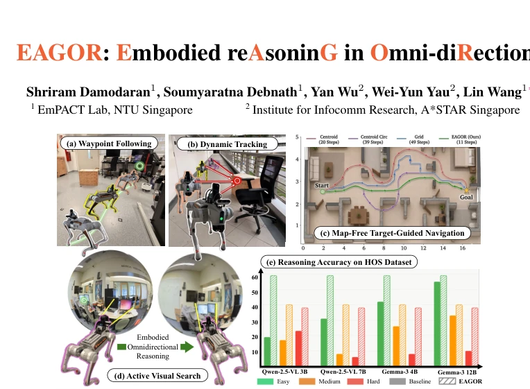
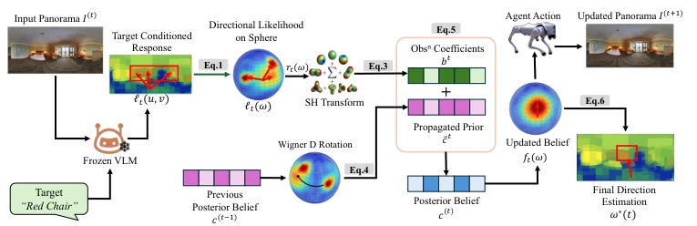
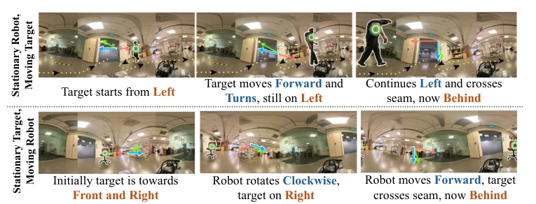

This paper introduces a "spherical patch" for 360-degree vision, aiming to solve geometric distortion caused by ERP projection. EAGOR does not train large models, but uses Spherical Harmonics (SH) for Bayesian filtering, employing a distinctive methodology. The praise is that it indeed solves the direction drift problem under rotation, significantly improves navigation success rate, and requires no fine-tuning; the critique is that essentially it is an "external module", heavily dependent on the underlying VLM's perception quality; once the VLM hallucinates (e.g., misidentifies targets), spherical filtering cannot save it. Moreover, although SH bandwidth selection of 7 is stable, the accuracy upper limit may be limited. For VLMs that rely purely on pixel coordinates to guess directions, this counts as a geometric awakening, but do not expect it to replace end-to-end strategies, after all it just treats VLM output as evidence, without modifying the VLM itself.
Embodied AI requires continuous updates of target direction, but 360 camera data is typically converted to 2D using Equirectangular Projection (ERP), which destroys spherical geometric properties. Existing VLMs such as Qwen-2.5-VL [6] directly process ERP images, ignoring that pixels encode direction rather than planar position. This leads to inconsistent direction estimation during agent motion, especially error accumulation at seamless boundaries [7, 8]. Benchmarks such as OSR-Bench [21] and ODI-Bench [20] show that multimodal large models perform poorly on reference frame conversion, where semantic recognition does not equal geometric correctness. Existing methods mostly rely on global frames or pre-built maps [24, 25], unable to maintain egocentric direction consistency in map-less navigation. Therefore, a framework is needed that can maintain continuous belief directly on the sphere to solve spatiotemporal inconsistency problems caused by projection distortion.

Figure 1: EAGOR for geometry-aware embodied omni-directional reasoning (⃝= Target)
The EAGOR framework decouples semantic perception and geometric state estimation. The pipeline is divided into four steps: 1) VLM extracts target conditional response map as spatial attention; 2) Map ERP pixel coordinates to spherical directions, generating a log-likelihood field; 3) Use Spherical Harmonics (SH) to encode the likelihood field into coefficients, constructing a Spherical Harmonic Belief Field (SH-BF); 4) Recursive Bayesian update: align the previous posterior belief with the current view via Wigner-D rotation, add current observation coefficients to obtain the new posterior. The key innovation lies in SH-BF providing a globally defined and rotation-equivariant basis, avoiding ERP seam discontinuity and latitude distortion. During decoding, the final direction is calculated via spherical mean, requiring no gradient search. The entire process requires no fine-tuning of the VLM backbone, used only as an evidence extractor. Operations in SH coefficient space make belief propagation geometrically correct, achieving training-free direction reasoning.

Figure 3: Overview of EAGOR framework. See main texts of Sec.3 for details.
实验Experiments
在 Habitat-Sim 仿真中测试了航点跟随和无地图导航，在 HOS 和 OSR-Bench 上评估主动视觉搜索，并在 Unitree-Go2 机器人上验证真实世界。基线包括 Centroid、Grid 及微调 VLM。结果显示，EAGOR 在 HOS 上相对提升 34.4%，导航成功率提高 14.6%，步数减少 17.7%。消融实验表明 SH 带宽 L=7 在精度与吉布斯振铃间取得平衡。真实世界实验中，即使有传感器噪声，EAGOR 仍能保持方向信念连贯。主要失败模式集中在 VLM 误检和罕见目标上，说明感知层仍是瓶颈。
Waypoint following and map-less navigation were tested in Habitat-Sim simulation, active visual search was evaluated on HOS and OSR-Bench, and verified on Unitree-Go2 robot in the real world. Baselines include Centroid, Grid, and fine-tuned VLM. Results show EAGOR relative improvement of 34.4% on HOS, navigation success rate increased by 14.6%, steps reduced by 17.7%. Ablation experiments show SH bandwidth L=7 balances accuracy and Gibbs ringing. In real-world experiments, even with sensor noise, EAGOR can maintain coherent direction belief. Main failure modes concentrate on VLM false detection and rare targets, indicating the perception layer is still the bottleneck.

Figure 5: Direction Estimation under Stationary and Mobile Operation. Top: stationary robot with moving target, (· · · ) is the target trajectory. Bottom: moving robot with stationary target. In each frame, (→) denotes the spherical directional prediction, (→) the ERP-based VLM baseline, and (□) the accumulated directional belief field. ⃝= Target, and (→) denotes the Ground Truth.